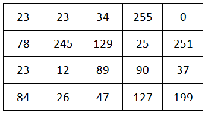

OpenCV C++内常用API
在本节中，我将介绍OpenCV C ++ API的一些基本概念。 这些概念将帮助你更轻松地理解和编写本教程中的OpenCV C ++示例程序。
头文件
你只需要在程序中包含opencv2/opencv.hpp头文件。 该头文件将包含应用程序的所有其他必需头文件。 因此，你无需再考虑应该为你的程序包含哪些头文件。
例：
#include <opencv2/opencv.hpp>
命名空间
所有OpenCV类和函数都在cv名称空间中。 我建议添加using namespace cv; 在include之后的行（我在本教程的所有示例程序中都使用了此方法）例：
#include <opencv2/opencv.hpp>
using namespace cv;
int main(int argc, char** argv)
{
// Read the image file
Mat image = imread("D:/My OpenCV Website/Eagle.jpg");
return 0;
}要不然呢你就必须在每个在源代码中的每个OpenCV类，函数和数据结构的开头附加cv::符。
例：
#include <opencv2/opencv.hpp>
int main(int argc, char** argv)
{
// Read the image file
cv::Mat image = cv::imread("D:/My OpenCV Website/Eagle.jpg");
return 0;
}数组(矩阵)的数据类型
数组的数据类型定义了通道数、为每个元素所分配的位数以及如何使用这些位数表示元素的值。如果数组表示的是图像，数组的每个元素则表示的是图像的像素。
任何单通道数组都应属于以下数据类型之一。
| CV_8U | 8位无符号整数 |
| CV_8S | 8位有符号整数 |
| CV_16U | 16位无符号整数 |
| CV_16S | 16位有符号整数 |
| CV_32S | 32位有符号整数 |
| CV_32F | 32位浮点数 |
| CV_64F | 64位浮点浮点数 |
这里我举例说明了一个数组类型为CV_8U的数组。它有一个频道。通道中的每个元素都是8位无符号整数。因此，每个元素的值范围应为0到255。单通道阵列也就是黑白(灰度)图像（像素值0表示黑色，255表示白色。0到255之间的像素值表示黑色和白色之间的颜色。）
数组类型为CV_8U的数组
我们可以为多通道数组定义所有上述数据类型。OpenCV最多支持512个通道。在这里，我将向您展示如何为多通道数组定义CV_8U数据类型。
- CV_8UC1 - 具有8位无符号整数的单通道数组，与CV_8U完全相同
- CV_8UC2 - 具有8位无符号整数的2通道数组
- CV_8UC3 - 具有8位无符号整数的3通道数组
- CV_8UC4 - 具有8位无符号整数的4通道数组
- CV_8U(n) - 具有8位无符号整数的n通道数组(n可以是1到512；需要放括弧)
同样的，你也可以使用任何其他单通道数据类型创建多通道数据类型。(例如: CV_16SC3，CV_32FC4，CV_64FC(27)等)
例1：
这里我举例说明了一个数组类型为CV_8UC3的数组。它有3个频道。每个通道中的每个元素都是8位无符号整数。因此，每个元素的值范围应为0到255。因为这是一个3通道数组，所以数组由具有3个元素的元组组成。第一个元组是{54,0,34}，第二个元组是{58,78,185}，依此类推。3通道阵列的常见类比示例是BGR图像，其由蓝色，绿色和红色通道组成。
数组类型为CV_8U3的数组
例2：
这里我举例说明了一个数组类型为CV_8SC2的数组。它有2个频道。每个通道中的每个元素都是8位有符号整数。因此，每个元素的值范围应为-128到127。因为这是一个2通道数组，所以数组由具有2个元素的元组组成。第一个元组是{-85，-127}，第二个元组是{25,23}，依此类推。
数组类型为CV_8SC2的数组
cv::Mat矩阵用法示例
- Mat img1(3, 5, CV_32F ); //创建一个具有32位浮点数的3 x 5单通道数组
- Mat img2(23, 53, CV_64FC(5) ); //创建一个带有64位浮点数的23 x 53 5通道数组
- Mat img3(Size(100, 200), CV_16UC2 ); //100 x 200 2通道阵列，带16位无符号整数
备注：
- 阅读本文后，你应该明白以下3种数据类型完全相同。
- CV_8U
- CV_8UC1
- CV_8UC(1)
- 虽然CV_32FC4是有效的数据类型，但CV_32FC5不是有效的数据类型。对于包含4个以上通道的数组，应使用括号括起通道编号。例如: CV_32FC(5)。
- 一些OpenCV函数只能处理上述数据类型的子集。因此，在使用OpenCV函数之前，建议先阅读文档。
图像深度和通道基本知识
任何数字图像都由像素组成。每个像素都应该有一些价值。像素的最小值为0并且它代表黑色。当像素的值增加时，该像素的强度也增加。像素的最大值取决于为每个像素所分配的位数。如果每个像素分配的位数为8 bit，该像素的最大值则为255（二进制为11111111） 什么是图像深度？图像深度指的是为每个像素所分配的比特数(位数)。如果是8，则每个像素的值可以在0到255之间。如果是4，则每个像素的值可以在0到15之间（二进制为1111）。
灰度图像
以下是一个深度为8位的图像模型。每个小方框代表一个像素。每个框可能包含0到255之间的值。
 深度为8的灰度图
以下是上图中的一些重要属性。
- 图像深度为8位。
- 图像由单个通道组成。
- 图像的高度为4像素。
- 图像的宽度为5像素。
- 该图像的分辨率为5 x 4。
这是个灰度图像(黑白)，因为它仅由单个通道组成。因此，此图像不包含任何颜色信息。如果此像素的值较高，则会显示更亮。如果该值较低，则会显示更暗。
彩色图像
下图是彩色图像的模型。彩色图像应至少包含3个通道：蓝色、绿色和红色。任何像素都是这三个值的组合。通过组合这3种基本颜色可以创建任何颜色。
例:
（255, 0, 0）代表纯红色。
（0, 255 ,0）代表纯绿色。
（0, 0, 255）代表纯蓝色。
（255, 0, 255）代表纯紫色。
彩色图由B、G、R通道组成
以下是上图中的一些重要属性。
- 图像深度为24位。（因为每个像素用8 x 3位表示(每个通道8位)）
- 该图像由3个通道组成。
- 图像的高度为4像素。
- 图像的宽度为5像素。
- 该图像的分辨率为5 x 4。
请特别注意，虽然一般我们称RGB空间（即颜色通道排法为R、G、B通道），但是OpenCV内默认的确实BGR空间（也就是说颜色通道的排法有别于RGB空间，即排法为B、G、R通道）